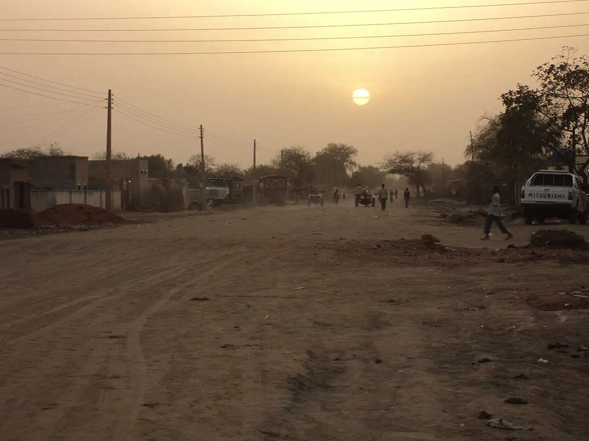
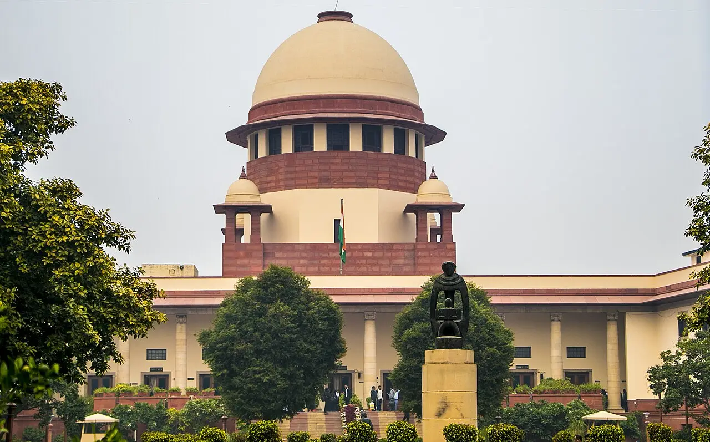
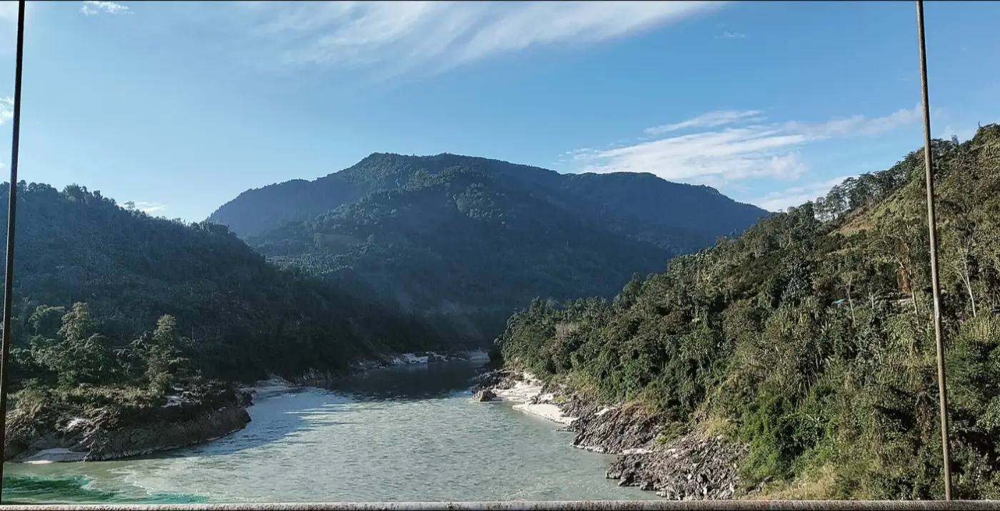
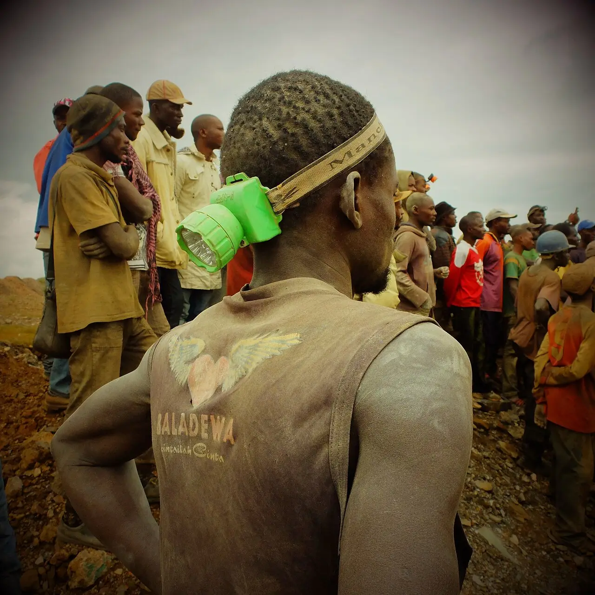
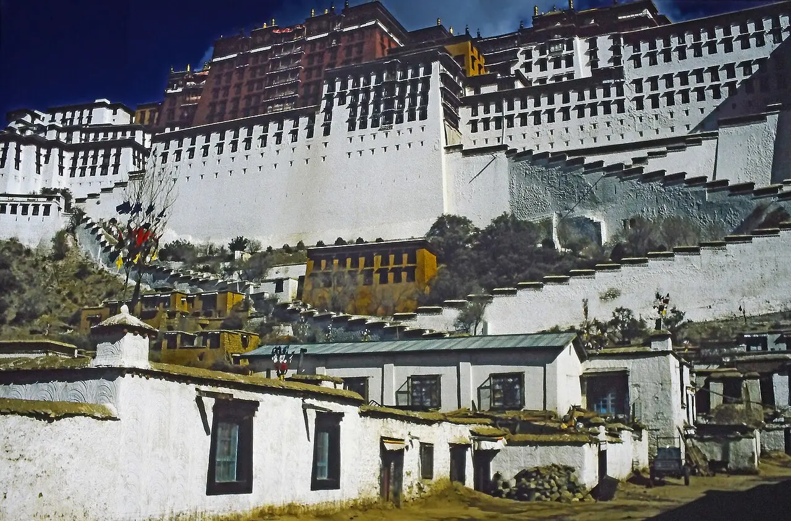
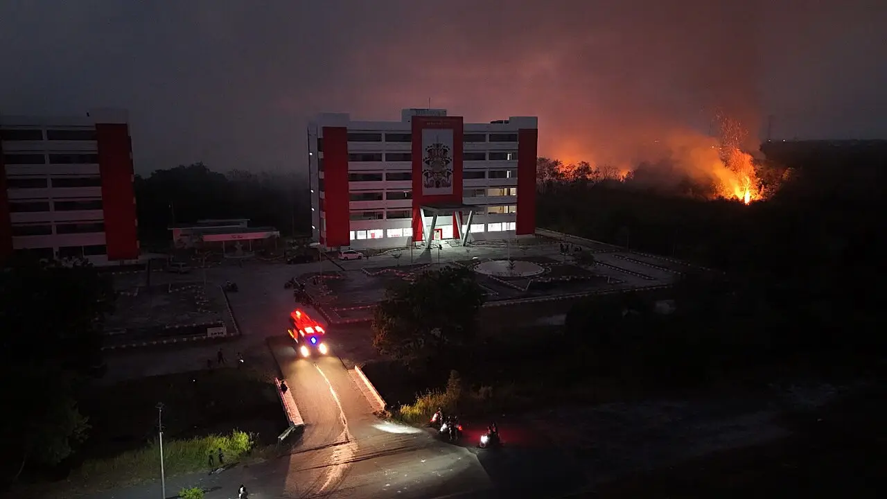
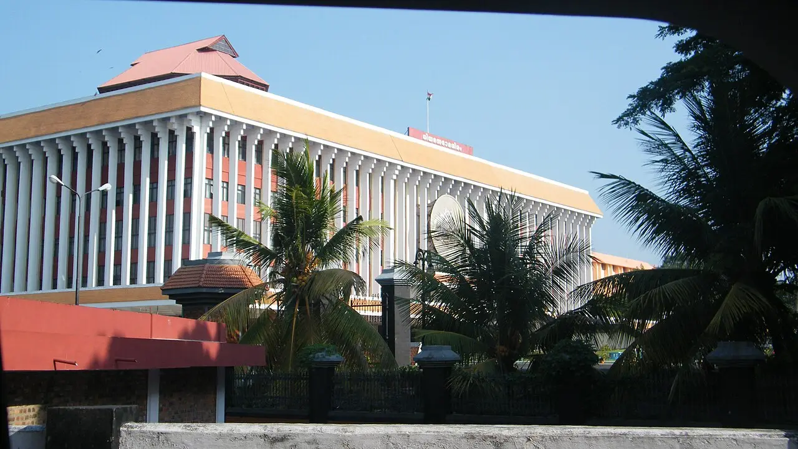
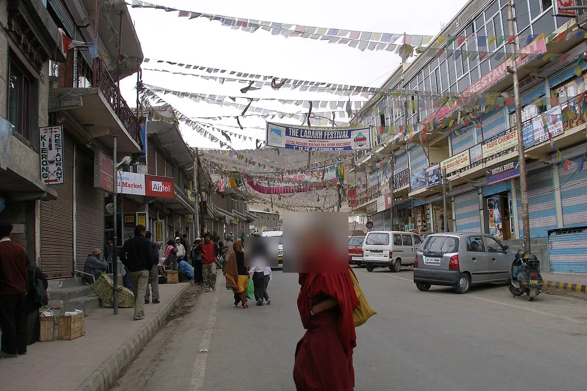

Drone kills eight civilians in West Kordofan
Strike kills UN water worker in Jabalia
Page operator arrested over Kulgam attack post
Thousands in Zagreb demand justice over patient's death

Umar Khalid, Sharjeel Imam seek Supreme Court bail
Women journalists' body rebuts Delhi Police in court
Hundreds rally in Imphal after highway ambush

Siang dam talks offer ends without breakthrough

Congo police detain over 500 at Kambove mine

No updates yet

Tear gas at Jakarta protest over graft, fires

Keralam: 15,627 posts taken down in six months

Leh police lift guard at Wangchuk's home
Follow a thread to keep it here.